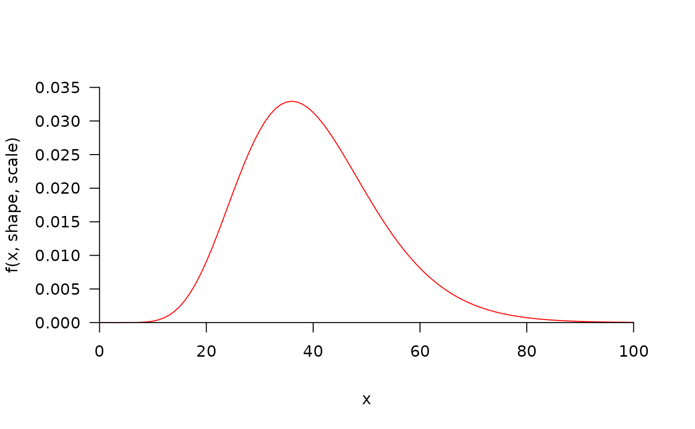
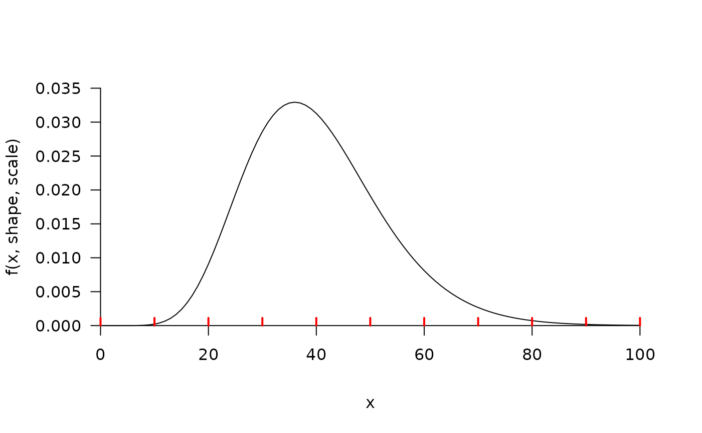

The function evaluates a user-supplied function at user-supplied x values (or an interpolated sequence of values across x and for defined values for other named parameters), and produces a pretty plot of the evaluated function using pretty_plot. The function was particularly motivated by the need to visualise probability density functions (e.g. GammaDist).
The x coordinates at which a function, f, should be evaluated. These may be interpolated between a user-specified range defined by user-specified limits depending on inputs to x_interp, from, to and n (see below).
A logical input that defines whether or not a regular sequence of coordinates should be interpolated within the limits of x at which the function is evaluated. This is only implemented if x is not a sorted sequence.
If x_interp = TRUE, from, to and n specify the range and the number of values between these limits at which the function is evaluated. By default, x_interp = TRUE and the function is evaluated for n = 101 values spanning the range of x
A function which depends on a named argument, x, and any other named arguments (see param).
A named list of other arguments required to evaluate the function.
The x and y axis labels. These can also be added via the mtext_args argument of pretty_plot via ....
A character that specifies the plot type (see plot.default).
A named list of parameters, passed to rug to add observed values to the plot. To add a rug using default parameters, simply specify add_rug = list(). If x values are not supplied in this list, they are taken from x. If pos is not supplied, the rug is positioned exactly along the x axis.
(depreciated) A logical input which defines whether or not to return the list of axis parameters produced by pretty_axis.
Other parameters that are passed to pretty_plot, such as pretty_axis_args to adjust axes.
The function evaluates a function and returns a plot. The list of axis parameters produced by pretty_axis is also returned invisibly.
curve for a similar function in base R.
#### Generate some example x values
set.seed(1)
x <- seq(0, 100, length.out = 100)
#### Simple examples
pretty_curve(x = x, f = stats::dgamma, param = list(shape = 10, scale = 4))
pretty_curve(x = x, f = stats::dgamma, param = list(shape = 11, scale = 3))
pretty_curve(x = x, f = stats::dnorm, param = list(mean = 10, sd = 30))
pretty_curve(x = x, f = stats::dnorm, param = list(mean = 10, sd = 30, log = TRUE))
#### Customise plot by passing arguments to pretty_plot()
pretty_curve(x, f = stats::dgamma, param = list(shape = 10, scale = 4),
pretty_axis_args = list(axis = list(las = TRUE)),
col = "red", type = "l")
#> Argument 'side' not supplied to pretty_axis_args (nor 'axis_ls'); defaulting to side = 1:2.

#### Add a rug with observed data
# Default is to take 'x' as observed data
pretty_curve(x, f = stats::dgamma, param = list(shape = 10, scale = 4),
add_rug = list())
# Specify rug parameters
pretty_curve(x, f = stats::dgamma, param = list(shape = 10, scale = 4),
add_rug = list(x = seq(0, 100, by = 10), col = "red", lwd = 2))
